SOC Fundamentals
Introduction to SOC
Security Operations Center (SOC) is a centralized unit where cybersecurity professionals continuously monitor, detect, and respond to cyber threats in real-time.
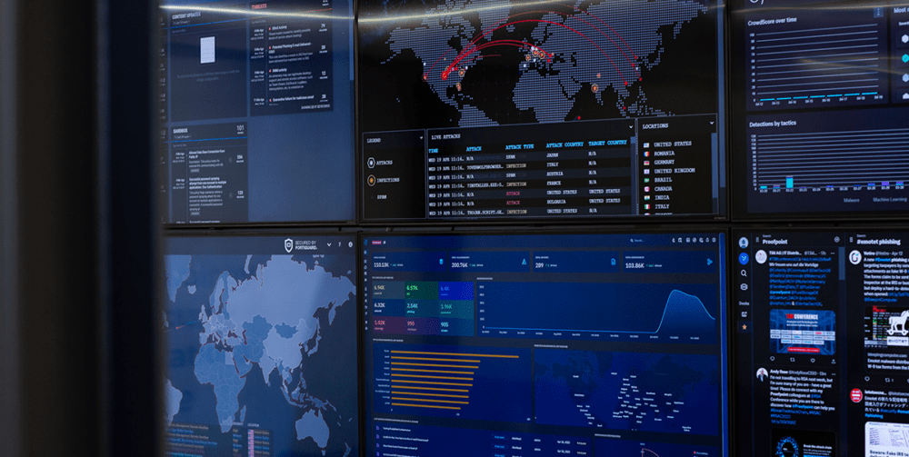
SOC Types and Roles
SOC
Organizations choose different SOC models based on budget and security needs
- In-House SOC is fully managed by the company and gives maximum control but costs more.
- Hybrid SOC combines internal staff with outsourced monitoring for better flexibility]
- MSSP (Managed Security Service Provider) fully outsources monitoring and alert handling to a third party.
- SOC-as-a-Service (SOCaaS) is a cloud-based subscription SOC that provides tools, experts, and incident response support without building a full int
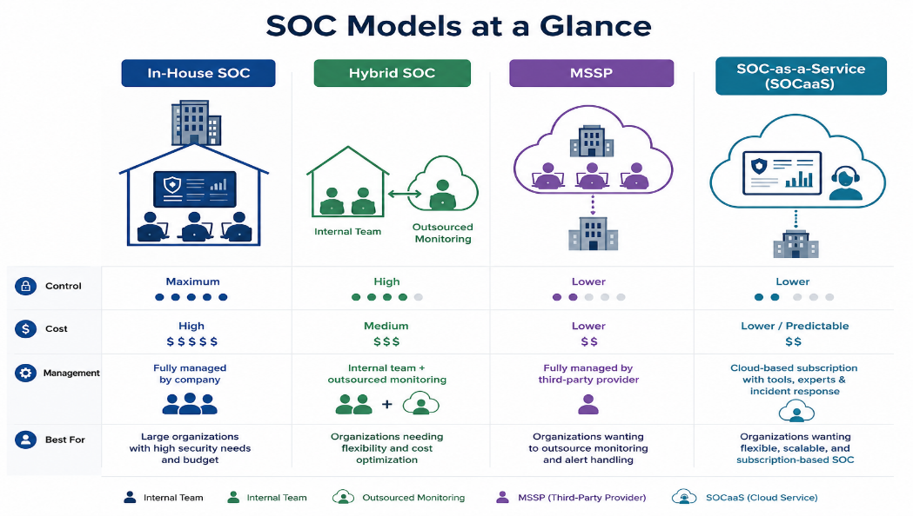
SOC Roles & Responsibilities:
A SOC team is divided into tiered analysts and specialized roles.
- L1 SOC Analysts monitor alerts, filter false positives, and triage incidents.
- L2 Analysts investigate escalated alerts, find root causes, assess impact, and contain threats.
- L3 Analysts handle advanced threats, forensics, and vulnerability analysis. Specialized roles include the Incident Responder, who controls active breaches and minimizes damage;
- the Threat Hunter, who proactively searches for hidden threats; the Security Engineer, who manages tools like SIEM, EDR, and SOAR and improves automation;
- and the SOC Manager, who oversees SOC operations, team management, playbooks, and reporting to leadership.
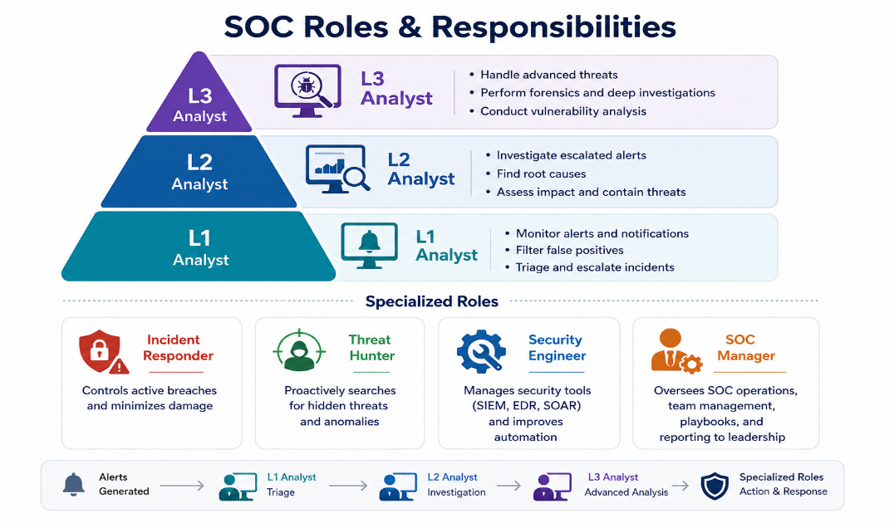
SIEM and Analyst Relationship
What is SIEM?
SIEM (Security Information and Event Management) is a security solution used in SOCs to collect, monitor, and analyze logs in real time to detect threats. It filters data and generates alerts for suspicious activity. Example: if someone enters 20 wrong passwords in 10 seconds, SIEM detects it as suspicious and creates an alert based on predefined rules. Popular SIEM tools include Splunk, QRadar, ArcSight ESM, and FortiSIEM.
Analyst Relationship:
SOC analysts mainly work with SIEM alerts. When an alert is generated, the analyst investigates whether it is a real threat or a false positive using tools like EDR, Log Management, and Threat Intelligence Feeds. Analysts check details such as IPs, hostnames, usernames, and file hashes to understand the incident
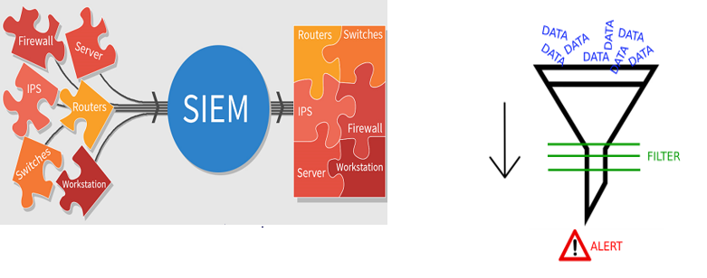
Log Management
Log Management systems collect logs from multiple sources like firewalls, operating systems, proxies, EDRs, and web servers into one central place, making investigations faster and more efficient for SOC analysts. Analysts use it to search suspicious IPs, domains, hashes, or communication activity across the network and identify affected devices. It helps detect hidden threats, track attacker communication, and verify whether other systems are connected to malicious infrastructure that SIEM may have missed.
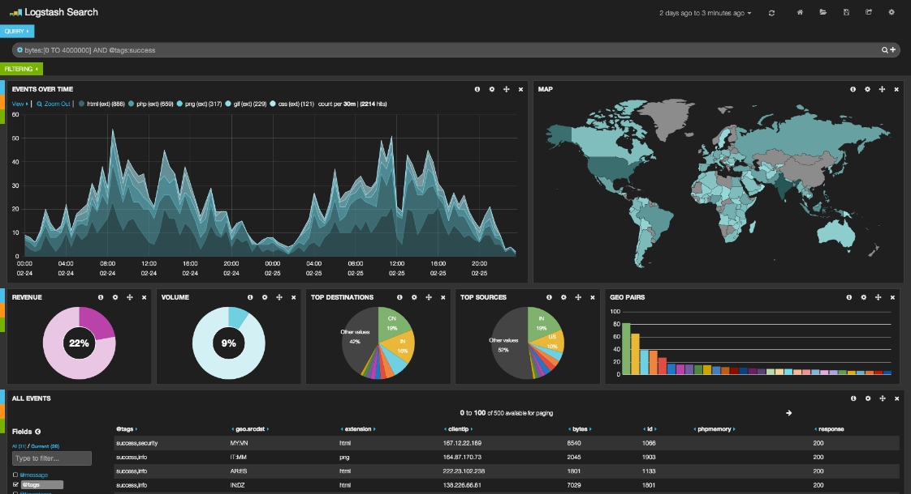
EDR - Endpoint Detection and Response
EDR is a security solution that continuously monitors endpoint devices like laptops and servers, collects activity data, detects threats, and helps analysts respond quickly. SOC analysts use EDR tools such as SentinelOne, Carbon Black, and FireEye HX to investigate processes, network connections, browser history, file activity, and IOCs across multiple hosts. EDR also supports live investigation by allowing analysts to remotely access infected machines and provides containment features to isolate compromised devices from the network while still maintaining communication with the EDR server for further analysis.
SOAR – Security Orchestration Automation and Response
SOAR is a platform that connects security tools and automates SOC tasks, helping analysts respond faster and reduce manual work. It can automatically check IP reputation, query file hashes, scan files in sandboxes, and use playbooks for step-by-step investigations. SOAR also centralizes tools like SIEM, log management, and threat intelligence into one platform, improving efficiency and consistency across the SOC team. Popular SOAR tools include Splunk Phantom, IBM Resilient, Demisto, and Logsign.
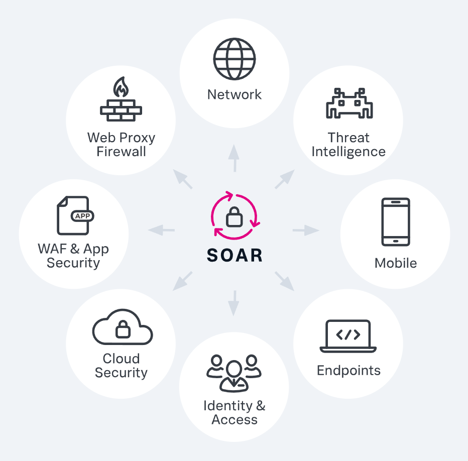
Threat Intelligence Feed
Threat Intelligence Feeds provide data about known threats such as malicious IPs, domains, malware hashes, and command & control (C2) servers to help SOC analysts investigate incidents faster. Analysts use platforms like VirusTotal and Talos Intelligence to check whether files, hashes, or IPs were involved in previous attacks. However, if no threat information is found, it does not guarantee the file is safe, so further static or dynamic analysis may still be required. Also, IP addresses can change ownership, meaning a previously malicious IP may later become harmless
Common Mistakes Made by SOC Analysts
Common SOC analyst mistakes include over-trusting VirusTotal, short sandbox analysis, poor log investigation, and ignoring old VirusTotal cache results. Malware may bypass AV detection, avoid sandbox execution, or activate later, so deeper analysis and proper log checking are always important.
Cyber Kill Chain
Introduction to Cyber Kill Chain
The Cyber Kill Chain is a cybersecurity model that explains the stages of a cyber attack from planning to achieving the attacker’s goal. It helps SOC analysts detect and stop attacks at different stages.
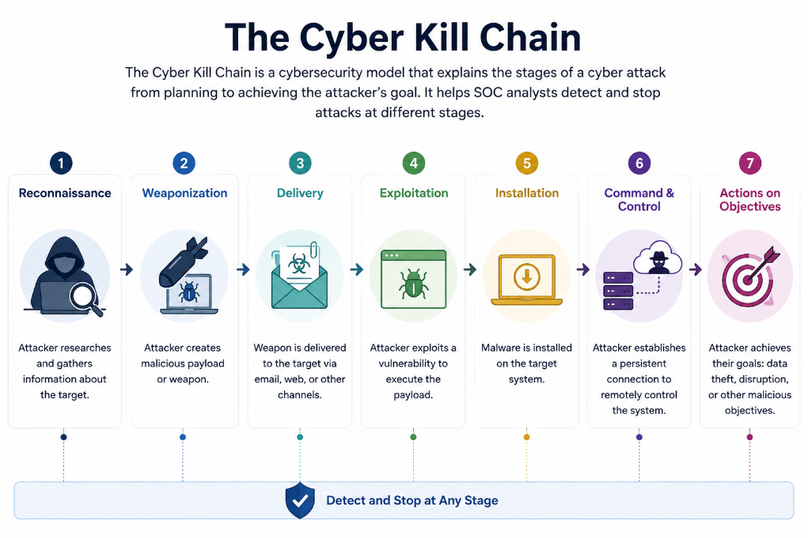
- Reconnaissance: The attacker gathers information about the target such as IPs, domains, employees, emails, or vulnerabilities using OSINT and scanning tools.
- Weaponization: The attacker creates a malicious payload by combining malware with an exploit, document, or script to attack the target.
- Delivery: The malware is delivered to the victim through phishing emails, malicious links, USBs, websites, or attachments.
- Exploitation: The malicious file or exploit executes on the victim’s system by exploiting a vulnerability or tricking the user.
- Installation: Malware installs itself on the target system to maintain persistence and survive reboots.
- Command and Control (C2): The infected system connects to the attacker’s server to receive commands, send data, or download more malware.
- Actions on Objectives: The attacker performs the final goal such as data theft, ransomware deployment, privilege escalation, or destroying systems.
MITRE ATT&CK Framework
Introduction
The MITRE ATT&CK Framework is a cybersecurity knowledge base used by SOC analysts, threat hunters, and security teams to understand attacker behavior that documents real-world attacker tactics, techniques, and procedures (TTPs). It helps security teams understand how attackers operate, detect threats, investigate incidents, and improve defenses.
MITRE Matrix, Tactics, Techniques & Sub-Techniques
- The MITRE Matrix organizes attacks into different Tactics and Techniques.
- Tactics represent the attacker’s goal, such as Initial Access, Persistence, Privilege Escalation, or Exfiltration.
- Techniques explain how attackers achieve those goals, like phishing or credential dumping.
- Sub-Techniques provide more detailed variations of a technique.
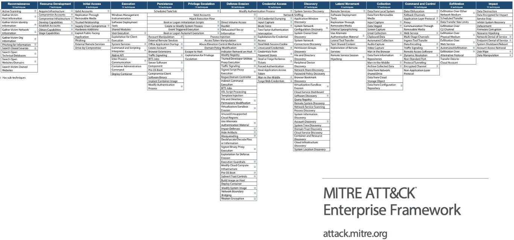
Mitigations, Groups & Software
- Mitigations: Mitigation means the security measures or actions used to reduce, prevent, or minimize the impact of cyber-attacks. Examples include firewalls, MFA, antivirus, patching, endpoint protection, and security awareness training.
- Groups & Software: Groups are known threat actors or APT groups tracked by MITRE based on their attack behavior. Software refers to malware, tools, or utilities used by attackers during attacks, such as ransomware, RATs, or credential dumping tools.
Phishing Email Analysis
Introduction to Phishing
Phishing is a social engineering attack where attackers trick users into clicking malicious links, downloading malware, or sharing sensitive information through fake emails, websites, or messages. In the Cyber Kill Chain, phishing emails are commonly used in the Delivery stage to deliver malware or malicious links to the victim. In the Cyber Kill Chain, phishing is part of the Delivery stage,(3rd Step) where attackers use phishing emails to deliver malware or malicious links to the victim.
What is an Email Header and How to Read Them?
An email header contains technical details about an email such as the sender, recipient, subject, date, reply address, mail servers, spam score, and authentication results like SPF/DKIM. SOC analysts use headers to trace the email route, verify if the sender is legitimate, and detect phishing or spoofed emails. Important fields include From, To, Subject, Date, Return-Path, Received, DKIM, Message-ID, and X-Spam Status. Headers can be viewed in Gmail by downloading the email as an .eml file or through Outlook Internet Headers.
- SPF (Sender Policy Framework): Checks whether the mail server sending the email is authorized by the domain owner. Helps prevent sender spoofing.
- DKIM (DomainKeys Identified Mail): Adds a digital signature to emails so the receiver can verify the email was not modified during transmission.
- DMARC (Domain-based Message Authentication, Reporting & Conformance): Uses SPF and DKIM results to decide what to do with suspicious emails (allow, quarantine, or reject) and provides reporting to domain owners.
Authentication Summary:
SPF → Verify Sender Server
DKIM → Verify Email Integrity
DMARC → Decide Action on Failed Emails
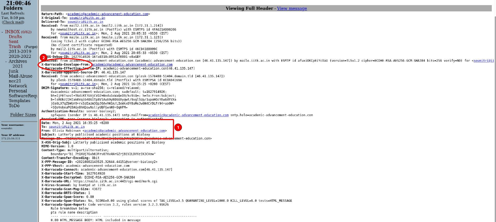
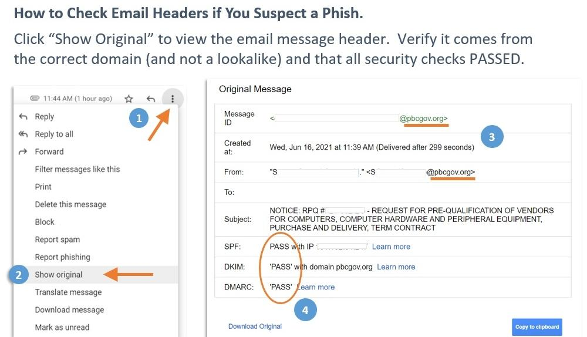
Static Analysis vs Dynamic Analysis
- Static Analysis: Examining a file, email, or malware without running it to identify suspicious content like hashes, strings, macros, or URLs.
- Dynamic Analysis: Running the file or malware in a sandbox/test environment to observe behavior such as network connections, process activity, or file changes
Detecting Web Attacks
Introduction
Web applications are browser-based services like Google, Facebook, and YouTube that store important user and business data. Because they are public-facing, attackers target them to steal data, gain access, or disrupt services. According to Acunetix, 75% of cyber attacks target web applications, making web attack detection important for SOC analysts.
Architecture:
User ↔ Web Application ↔ Database
↑
Attacker
How Web Applications Work
Web attacks happen when attackers exploit vulnerabilities in web applications by sending malicious input through forms, URLs, headers, search bars, or file uploads. If the application does not properly validate or sanitize the input, the attacker can steal data, execute code, bypass authentication, or gain server access.
Attack Flow:
Attacker Input
↓
Vulnerable Web Application
↓
Exploit Executes
↓
Data Theft / Server Compromise
Prevention
Validate and sanitize all user input, use secure coding practices, keep web applications updated, apply proper authentication/authorization, and use security tools like WAF, IPS, and SIEM to detect attacks early.
SQL Injection
SQL Injection happens when a web application directly inserts unsanitized user input into SQL queries, allowing attackers to manipulate the database. Attackers can bypass login pages, steal sensitive data, modify database entries, or even execute system commands. SOC analysts detect SQLi by monitoring suspicious SQL keywords like SELECT, UNION, WHERE, special characters (', --), unusual request frequency, and automated tools like sqlmap. Prevention includes sanitizing user input, avoiding raw SQL queries, and using updated secure frameworks.
Prevention
Sanitize user input, use parameterized queries/prepared statements, avoid raw SQL queries, and keep frameworks updated.
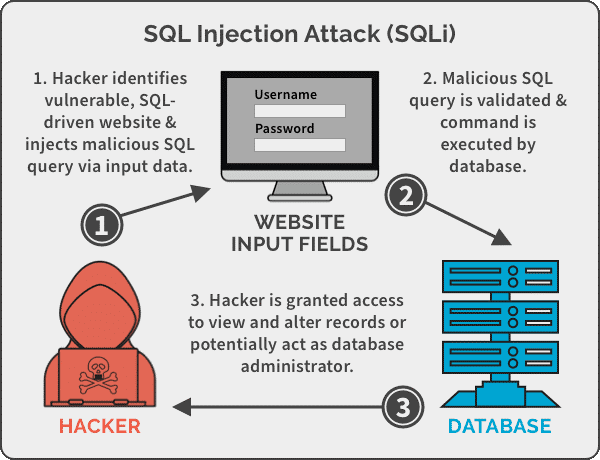
Cross Site Scripting (XSS)
XSS is a web attack where attackers inject malicious JavaScript into website input fields such as search bars, comment sections, login forms, or URL parameters. When another user opens the infected page, the script executes in their browser and can steal cookies, sessions, credentials, or redirect the victim to malicious websites.
Prevention
Sanitize and encode user input, validate data before displaying it on webpages, and use updated secure frameworks.
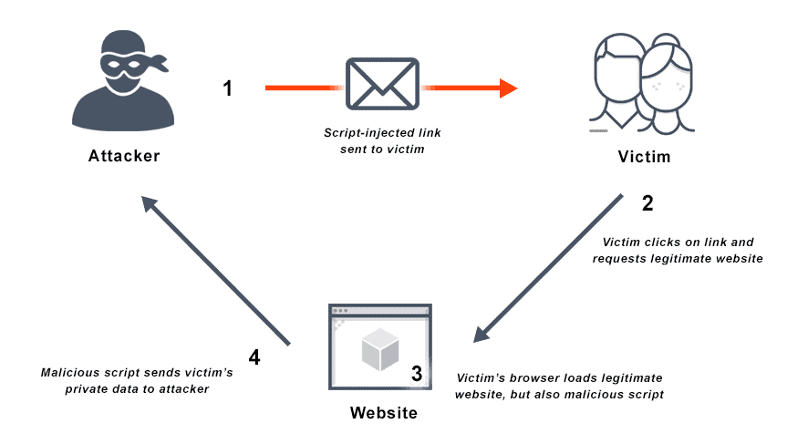
Command Injection
Command Injection is a web attack where attackers place operating system commands into website input fields, URL parameters, headers, or file names. If the web application directly passes this input to the server shell without validation, the operating system executes the attacker’s command. This can allow attackers to run commands, create reverse shells, steal data, or fully compromise the server.
Attack Flow:
User Input
↓
OS Command Execution
↓
Server Compromise
- Attacker Goals: Execute commands , Reverse shell access , Full server control
- Detection: Commands like ls, cat, dir , Suspicious User-Agent values , Reverse shell payloads
- Prevention: Sanitize all input , Limit application privileges , Use containers/virtualization , avoid passing user data directly to the OS shell, and limit server/application privileges.
IDOR (Insecure Direct Object Reference)
IDOR is a web attack where attackers change IDs or parameters in URLs or requests to access data that does not belong to them because the application does not properly check authorization.
id=1→ Own Data
id=2→ Other User Data
Prevention
Implement proper authorization checks for every request, avoid exposing unnecessary IDs/parameters, and use session-based access control.
RFI & LFI
LFI (Local File Inclusion)
LFI occurs when attackers manipulate file path parameters to access sensitive files stored on the local server, such as /etc/passwd or configuration files.
LFI Flow:
Attacker Input
↓
Local File Path Manipulation
↓
Sensitive Server File Access
LFI Prevention: Validate file paths, restrict access to sensitive directories, and disable unnecessary file inclusion features.
RFI (Remote File Inclusion)
RFI occurs when attackers force the web application to load a malicious file from a remote server, which may execute malicious code on the target system.
RFI Flow:
Attacker Input
↓
Remote Malicious File Included
↓
Code Execution on Server
RFI Prevention: Disable remote file inclusion, validate user input, restrict external URLs, and keep web applications updated.
File Upload / Web Shell
A File Upload or Web Shell attack happens when attackers upload a malicious file (such as .php, .jsp, or .aspx) through an insecure upload feature on a website. Once uploaded, the web shell executes commands on the server, allowing attackers to gain remote access, upload malware, steal data, or control the server.
Attack Flow:
Malicious File Upload
↓
Stored on Server
↓
Web Shell Executes
↓
Remote Server Control
Prevention
Restrict allowed file types, validate file content, scan uploaded files, rename uploads, and store files outside the web root.
Malware Analysis Fundamentals
Introduction to Malware Analysis
Malware Analysis is the process of examining malicious files or programs to understand how they work, what damage they cause, and how to detect or remove them. SOC analysts use malware analysis to identify Indicators of Compromise (IOCs), attacker behavior, persistence methods, and command & control (C2) communication.
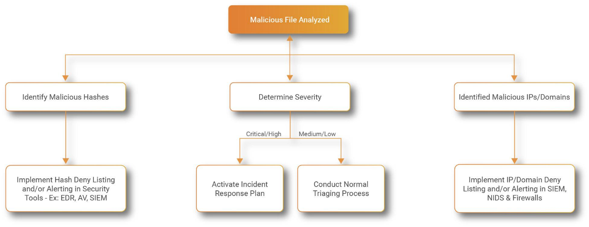
How Malware Analysis Helps SOC Analysts
Malware analysis helps SOC analysts detect threats faster, identify infected systems, understand attacker behavior, improve incident response, and create better detection rules. It also helps discover malicious IPs, domains, hashes, registry changes, and suspicious processes.
Malware Definition and Malware Types
Malware is malicious software created to damage systems, steal information, spy on users, or gain unauthorized access.
Common malware types include:
- Virus → Infects files/programs
- Worm → Spreads automatically across networks
- Trojan → Pretends to be legitimate software
- Ransomware → Encrypts files and demands money
- Spyware → Secretly steals information
- Rootkit → Hides malicious activity
- Botnet → Group of infected devices controlled remotely
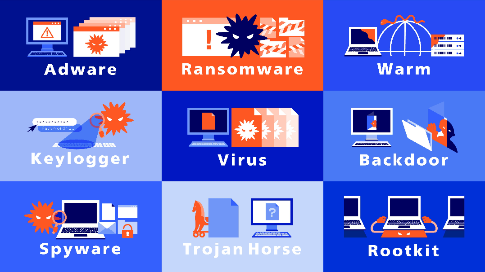
Which Approach Should You Choose When Analyzing Malware?
Static Analysis
Static Analysis means examining malware without running it. Analysts check file hashes, strings, imports, file structure, or suspicious code. It is safer and faster but may not reveal full behavior.
Dynamic Analysis
Dynamic Analysis means running malware inside a safe sandbox environment to observe its real behavior such as file changes, network traffic, processes, or registry modifications.
Static Analysis → No Execution
Dynamic Analysis → Run in Sandbox
Usually, analysts use both methods together because Static Analysis gives quick information while Dynamic Analysis shows the actual behavior of the malware.
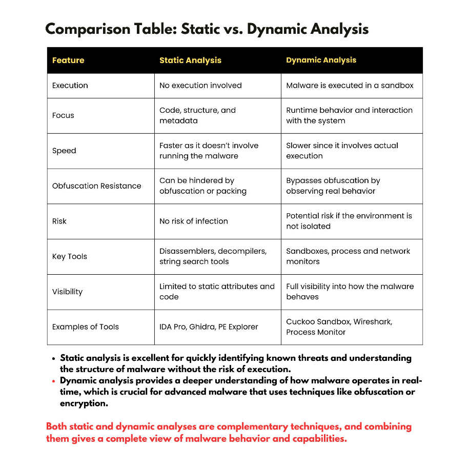